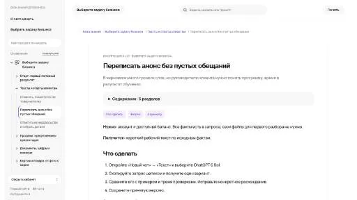

МолекулаАгрегаторы нейросетей
Молекула объединяет модели для текстов, изображений, видео и музыки. В одном аккаунте можно подобрать инструмент под этап работы, сохранить инструкции проекта и использовать готовые роли.
К задаче в МолекулеДетекторы ИИ-текста: Сравнивайте результаты на материалах, происхождение которых вам известно. Оценка детектора может ошибаться и не служит доказательством авторст
Вместо попытки угадать оценку детектора разберите сам материал: конкретность, источники и повторы. Молекула поможет подготовить понятную версию, а автор проверит факты и собственный смысл.
Найди в этом тексте общие фразы, неподтверждённые утверждения и повторы. Предложи правки с объяснением. Сохрани термины и пометь места, где нужен источник или пример автора.

Молекула объединяет модели для текстов, изображений, видео и музыки. В одном аккаунте можно подобрать инструмент под этап работы, сохранить инструкции проекта и использовать готовые роли.
К задаче в МолекулеTruthScan используют для задачи: считывать текст с изображения. Ещё одно направление работы: анализировать признаки текстового материала.
«Illuminarty» готовит визуальные материалы по заданию.
«ZeroGPT» проверяет признаки происхождения или заимствования текста.
Free AI Detector предназначен для поиска признаков машинного происхождения в текстовом и звуковом контенте. Исходное описание также упоминает проверку ИИ-маркировки. Результат такой классификации нужно читать как оценку инструмента: он не устанавливает авторство сам по себе, поэтому спорный материал требует проверки происхождения и исходных записей.
«GPT-Minus1» готовит текстовый черновик по условиям задачи.
Сравнивать «GPTKit» с другими инструментами раздела «Детекторы ИИ-текста» удобнее на одинаковом исходном материале.

Winston AI относится к инструментам, которые помогают готовить учебный материал и объяснения. Ещё одно направление работы: анализировать признаки текстового материала.
«ZeroGPT Plus» проверяет признаки происхождения или заимствования текста.
AICheatCheck анализирует письменные работы студентов, рассматривая структуру предложений и читаемость текста. Инструмент предназначен для проверки возможного использования языковой модели. Продукт ориентирован на преподавателей и университеты; к нему представлены технические материалы, которые дополняют объяснение подхода к анализу работы.
CamoCopy относится к инструментам, которые помогают редактировать уже написанный материал. Ещё одно направление работы: анализировать признаки текстового материала.
«DavinciAI Toolkit» позволяет создавать воспроизведение голоса. «DavinciAI Toolkit» также проверяет признаки происхождения или заимствования текста.
AI Spy определяет предполагаемое происхождение речевого аудиоматериала средствами ИИ. Продукт сопоставляет человеческую речь с машинно сгенерированным звучанием и выводит результат этого определения. Назначение связано с обнаружением синтетического голоса: пользователь рассматривает запись через автоматический анализ того, как был создан её речевой материал.
«DetAFake» представлен в разделе «Детекторы ИИ-текста». При выборе проверьте нужную операцию и условия работы с результатом.

Originality.ai рассчитан на задачи, где нужно сокращать материал до основных положений. Ещё одно направление работы: проверять ошибки в тексте.
«CheckforAi» проверяет признаки происхождения или заимствования текста. «CheckforAi» также помогает находить материалы по вопросу.
«GPT Zero» проверяет признаки происхождения или заимствования текста.
«AI Plagiarism Checker» проверяет признаки происхождения или заимствования текста.
«AI undetect» проверяет признаки происхождения или заимствования текста.
Сравнивать «AI Voice Detector» с другими инструментами раздела «Аудио (голос и музыка)» удобнее на одинаковом исходном материале.
EssayGrader оценивает эссе по заданным критериям и формирует пояснения для улучшения текста. Инструмент отмечает грамматические и пунктуационные ошибки, подготавливает краткое содержание. Отдельно предусмотрен анализ возможной генерации ИИ, позволяющий рассматривать содержание и происхождение письменной работы в одном продукте.
ContentDetector AI анализирует письменный материал и выдаёт оценку вероятности машинного происхождения. Результат представляет собой классификацию сервиса, а не доказательство авторства. Для спорного текста дополнительно изучите историю подготовки и исходные материалы; автоматический процент нельзя использовать как единственное основание для обвинения человека или оценки его работы.
GPT-2 Output Detector оценивает вероятность сгенерированного происхождения текста с использованием модели RoBERTa. Инструмент выводит результат автоматической классификации материала. Назначение связано с рассмотрением текста как человеческого либо искусственного вывода, при этом оценка модели не подтверждает автора и не доказывает способ создания документа.
Сравнивать «AI Content Detector - Leap» с другими инструментами раздела «Детекторы ИИ-текста» удобнее на одинаковом исходном материале.
Для «AI Badge» сначала определите свою задачу и требуемый результат. Карточка относится к направлению «Детекторы ИИ-текста».
«AI Detector Pro» извлекает письменный текст из изображения. «AI Detector Pro» проверяет признаки происхождения или заимствования текста.
Для «Human or AI» сначала определите свою задачу и требуемый результат. Карточка относится к направлению «Развлечения».
Для «X Detector» сначала определите свою задачу и требуемый результат. Карточка относится к направлению «Детекторы ИИ-текста».
«Crossplag» проверяет признаки происхождения или заимствования текста.
«DecEptioner» проверяет признаки происхождения или заимствования текста.
«Detecting-AI.com» разбирает данные для рабочего анализа.
Сравнивать «Humanornot» с другими инструментами раздела «Развлечения» удобнее на одинаковом исходном материале.
Страница 1 из 1
Сервис оценки текста выдаёт результат по своей методике. Процент в отчёте не устанавливает автора и не показывает историю подготовки документа. Для учебной или рабочей проверки полезнее собрать сведения о процессе: черновики, источники, правки и объяснение автора.
Для сравнения возьмите несколько собственных материалов: текст без помощи ИИ, машинный черновик и материал после редакторской правки. Добавьте короткую техническую запись и обычное письмо. Сохраните исходные версии. Такой набор позволит увидеть, насколько оценка меняется между типами текста, а не только между предполагаемыми авторами.
Не подбирайте примеры после получения удобного результата. Сначала задайте способ оценки и запишите, какие ошибки существенны в вашей задаче. Если речь о работе ученика, ложное обвинение особенно важно рассматривать отдельно от пропущенного машинного черновика.
Сопоставьте отчёт с версионной историей и содержанием работы. Попросите автора объяснить аргументы или воспроизвести часть решения. Низкое или высокое значение детектора не заменяет эту проверку. Разные языки, длина и жанры материала также требуют отдельных примеров.
Если цель — сделать текст понятнее, переходите к редактуре формулировок, а не к поиску желаемого процента. Для языковых ошибок есть проверка грамматики; для работы с опорными материалами — цитаты и источники.